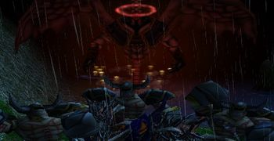

Block devil waves on city gate, you just need to hold ~20s then city defenders will do it for you.
Your Q range is bigger than demon lord vision, you can actually KILL him without gaining aggro.
Use your T after debuffing Demon with R for big damage outburst, then go back to spamming him with Q E F from range.
Save your W for Doom to have movement speed, or time it for Infernal drop to defend against damage and stun.